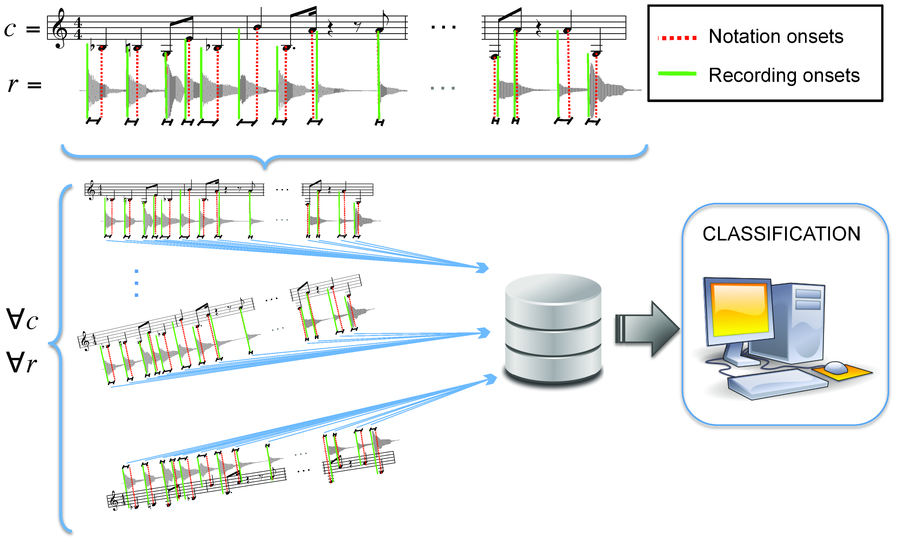
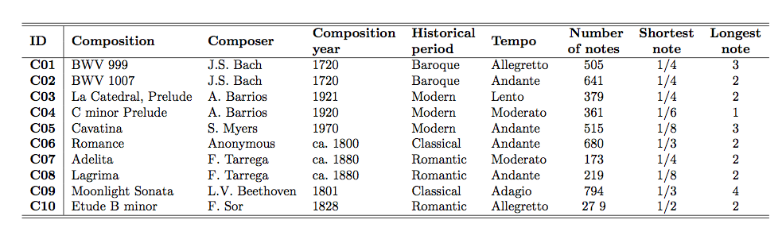
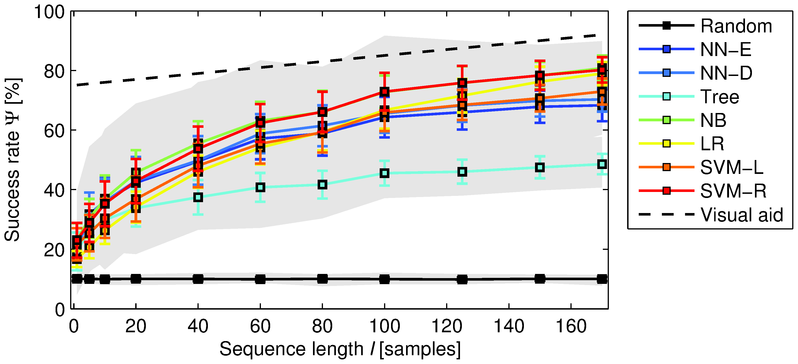

In this article, we explore a complementary view on the structural origin of timing deviations. In particular, we cast timing deviations as being characteristic of a given composition, up to the point of allowing the automatic identification of the musical piece the recording belongs to. To validate this hypothesis we consider onset deviation sequences or n-grams, i.e., the succession of temporal anticipations or delays for each note attack. The choice of this event-shift timing representation is motivated by the highly percussive nature of the instrument being considered: classical guitar. Classical guitar recordings represent an interesting test corpus, as almost no studies on timing deviations consider this instrument.
See the PDF version of our PLOS ONE paper describing this research.
To compute onset deviations from the score we follow a semi- automatic approach that yields a plausible placement of note attacks. In particular, we combine standard onset detection algorithms for music signal processing with a manual synchronization of the score measures. With the latter, we can correct potential errors in the automatic onset detection stage and, furthermore, determine a 'theoretical' temporal onset location corresponding to a straight, mechanical rendition of the piece. The actual onset locations are then subtracted from the corresponding notated locations, as if we were measuring temporal differences from the score.

We formulate our hypothesis as a classification problem. Thus, within a strong statistical framework, we gain objective and quantitative evidence for the structural, piece-dependent nature of onset deviations. To show that the predictive power of onset deviation sequences is generic and not biased towards a specific classification scheme, we consider 7 basic algorithms exploiting five different machine learning principles: decision tree learning, instance-based learning, linear regression, Bayesian learning, and support vector machines. Specifically, we use nearest neighbor algorithms with Euclidean and dynamic time warping distances (NN-E and NN-D, respectively), classification and regression trees (Tree), a naive Bayes Gaussian classifier (NB), a logistic regression model (LR), and support vector machines with linear and Gaussian kernels (SVM-L and SVM-R, respectively). We additionally consider a random classifier as a baseline. To evaluate identification performance we employ standard out-of-sample cross-validation accuracies, and to evaluate statistical significance we depend on the power of the Wilcoxon signed-rank test with Holm-Bonferroni adjustment.
In our music collection we have 10 different compositions, and each composition is performed by 10 different guitarists, thus yielding a total of 100 recordings. However, some performances of different compositions have been interpreted by the same musician. In total, we have 82 different guitarists, with some of them playing between 2 and 5 pieces. The collection includes well known guitarists such as Andres Segovia, John Williams, Manuel Barrueco, Rey de la Torre, Robert Westaway, and Stanley Myers. In order to encompass different epochs, we chose compositions spanning four different periods: baroque, classical, romantic, and modern (see tabel below S1). Recording years go from 1948 to 2011, and the number of onsets per score measure varies between 1 and 16. A table relating compositions, recordings, and performers is provided (see list of recordings).


Previous Figure shows the classification accuracy as a function of the length of the onset deviation sequence. The error bars correspond to the standard deviation and the shaded area denotes the range of all possible values (including minimum and maximum). The visual aid corresponds to a straight line of the form Y(l)~azbl, where a is the intercept, b is the slope of the straight, and l is the sequence length. In the plot a~75 and b~0:1. doi:10.1371/journal.pone.0069268.g002
Obtained results show (a) that onset deviation sequences are a powerful predictor of the musical piece being played, (b) that they are at least as powerful as direct music score information corresponding to relative note durations, if not better, (c) that such predictive power is robust to classification scheme choices, to the size of the considered data set, and to the length of the considered sequences, (d) that even very short sequences provide statistically significant accuracies, and (e) that temporal dependencies between onset deviations are key to obtaining such accuracies.